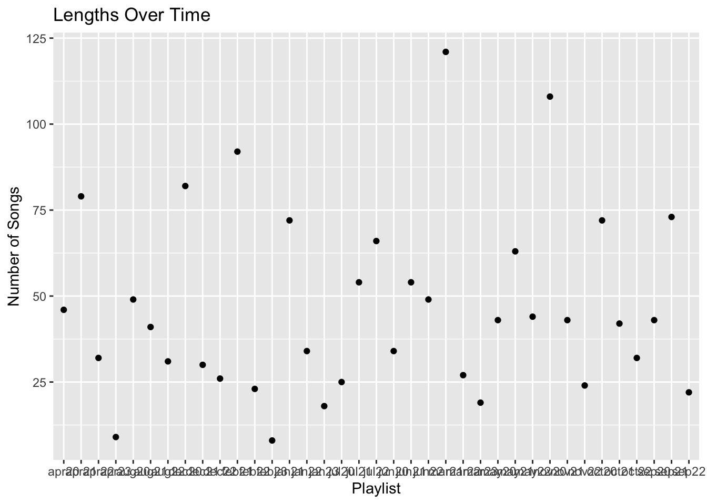
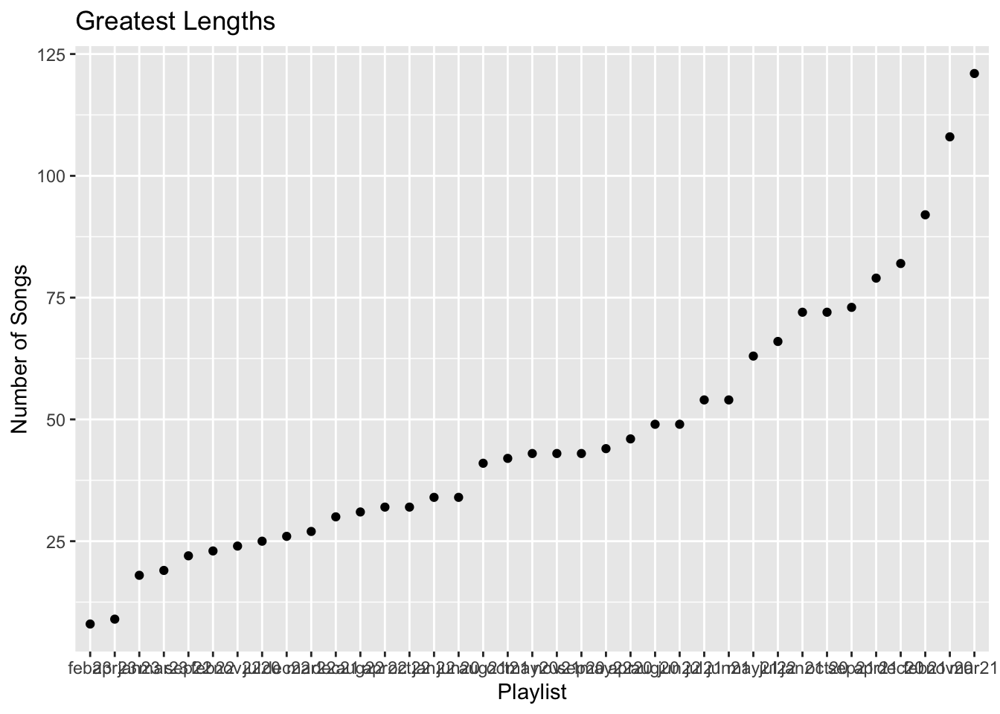
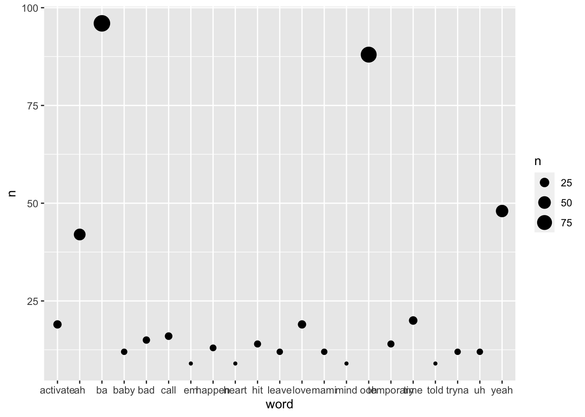
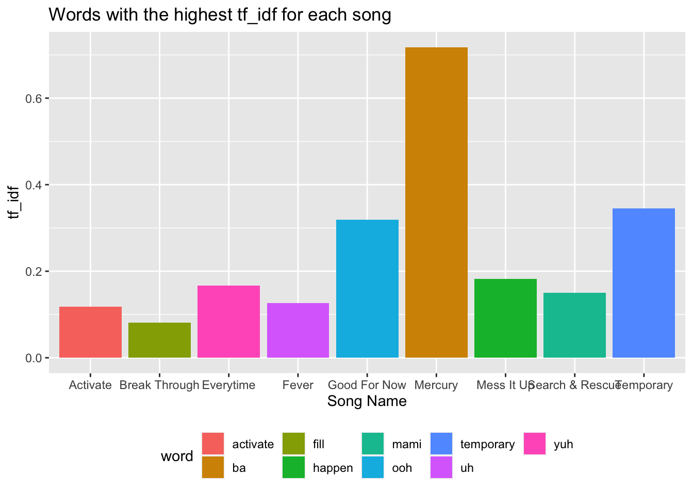
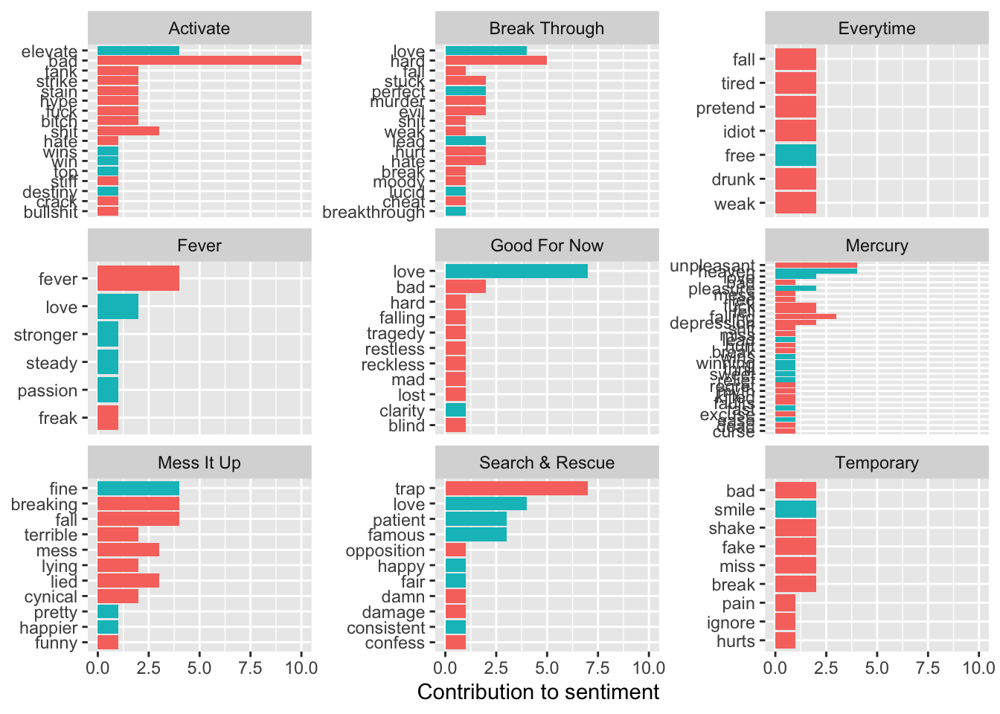

In this analysis, I look at data from my own Spotify account, specifically my April 2023 playlist. I used the {spotifyr} and {geniusr} packages to import data from my Spotify account, as well as song lyric data from Genius lyrics.
library(spotifyr)library(geniusr)
Attaching package: 'geniusr'
The following objects are masked from 'package:spotifyr':
get_album, get_artist
Q1: How have the lengths of my playlists changed over time?
In order to visualize how the number of tracks per playlist changed over time, I used ggplot with the name of the playlist on the x-axis and the number of songs per playlist on the y-axis. Then, in order to see which playlists had the least and greatest amount of songs, I mutated the data frame to order the playlists in increasing length and plotted it again.
monthly_playlists |>ggplot(aes(x = name, y = tracks.total)) +geom_point() +labs(title ='Lengths Over Time',x ='Playlist',y ='Number of Songs' )

monthly_playlists |>mutate(name =reorder(name, tracks.total)) |>ggplot(aes(x = name, y = tracks.total)) +geom_point() +labs(title ='Greatest Lengths',x ='Playlist',y ='Number of Songs' )

From looking at the plots, I can see that the number of songs that I added per playlist varied greatly from month to month. It looks like the months that contained the least amount of songs are February 2023 and April 2023, while the playlists that contained the greatest amount of songs are March 2021 and November 2020.
April 2023 Playlist
I then used the {spotifyr} package to get the tracks from my April 2023 playlist. After removing unnecessary columns, I was left with the variables added_at (the timestamp that the track was added to the playlist), track.duration_ms (the length of the track), track.explicit (whether it is explicit), track.id, and track.name, as well as track.album.id and track.album.name, that relate to the album that the track is in.
I then used the {geniusr} package to pull lyric data for each of the songs in my April 2023 playlist. I removed some unnecessary columns and was left with the variables song_name, artist_name, and line for each line of the song.
Next, I joined my data frame containing lyric data to the data frame for the playlist.
apr_tracks <- apr_tracks |>left_join(df_songs, by =c('track.name'='song_name'))
Warning in left_join(apr_tracks, df_songs, by = c(track.name = "song_name")): Each row in `x` is expected to match at most 1 row in `y`.
ℹ Row 1 of `x` matches multiple rows.
ℹ If multiple matches are expected, set `multiple = "all"` to silence this
warning.
Q2: Which words are the most frequent in all the songs?
First, I wanted to know which words were most frequent out of all the songs in the playlist. To do so, I first unnested tokens and removed the stop words from the data frame. I then, created a scatter plot that showed the frequency of the top words, with the size of each point correlating to the frequency.
word n
1 ba 96
2 ooh 88
3 yeah 48
4 ah 42
5 time 20
6 activate 19
7 love 19
8 call 16
9 bad 15
10 hit 14
11 temporary 14
apr_tidy |>count(word, sort =TRUE) |>slice_max(n, n =20) |>ggplot(aes(x = word, y = n, size = n)) +geom_point()

From this plot, I can see that two ‘words’ were significantly more frequent than the rest - ‘ba’ and ‘ooh’. The rest hover around the same area in the plot, indicating that no other words stand out and occur several times more frequently than the others.
Q3: Which words are most unique to each song in the playlist?
In order to see which words were most unique to each song in the April 2023 playlist, I arranged the words by frequency and found the tf_idf for each word.
# A tibble: 142 × 6
# Groups: track.name [9]
track.name word n tf idf tf_idf
<chr> <chr> <int> <dbl> <dbl> <dbl>
1 Mercury ba 96 0.327 2.20 0.717
2 Temporary temporary 14 0.157 2.20 0.346
3 Good For Now ooh 39 0.394 0.811 0.319
4 Mercury ah 42 0.143 2.20 0.314
5 Mess It Up happen 12 0.121 1.50 0.182
6 Everytime yuh 5 0.0758 2.20 0.166
7 Good For Now dreaming 7 0.0707 2.20 0.155
8 Search & Rescue mami 12 0.0682 2.20 0.150
9 Everytime bringing 4 0.0606 2.20 0.133
10 Fever uh 8 0.0842 1.50 0.127
# … with 132 more rows
I then made a bar graph to visualize the words with the highest tf_idf for each song.
apr_idf |>group_by(track.name) |>filter(tf_idf ==max(tf_idf)) |>ggplot(aes(x = track.name, y = tf_idf, fill = word)) +geom_bar(stat ='identity') +labs(title ='Words with the highest tf_idf for each song',x ='Song Name',y ='tf_idf' ) +theme(legend.position ='bottom')

From looking at the bar graph, ‘ba’ has the highest tf_idf in the song Mercury, meaning it is the least likely word to be found in other songs. Other unique words include ‘activate in Activate, ’fill’ in Break Through, ‘yuh’ in Everytime, ‘uh’ in Fever, ‘ooh’ in Good For Now, ‘happen’ in Mess It Up, ‘mami’ in Search & Rescue, and ‘temporary’ in Temporary.
Sentiments
Next, I wanted to see the sentiments of the words for each song. To do so, I first created a data frame by joining the Bing sentiments to the April 2023 data frame containing the words of the songs.
apr_bing <- apr_tidy |>inner_join(get_sentiments('bing')) |>count(track.name, word, sentiment, sort =TRUE) |>ungroup()
Joining with `by = join_by(word)`
Q4: Which words contribute most to the sentiment of each song?
I then created a bar plot to show the words with the top contributions to sentiment for each song. The red-filled bars indicate negative sentiment while the blue-filled bars indicate positive sentiment.
apr_bing |>group_by(track.name, sentiment) |>slice_max(n, n =10) |>ungroup() |>mutate(word =reorder(word, n)) |>ggplot(aes(n, word, fill = sentiment)) +geom_col(show.legend =FALSE) +facet_wrap(~track.name, scales ='free_y') +labs(x ='Contribution to sentiment',y =NULL)

From this plot, I can see that songs like Everytime and Temporary contain more words that contribute to negative sentiment than positive sentiment, while songs like Fever contain more words that contribute to positive sentiment than negative sentiment. The rest of the songs have more of an even split, with most of them leaning more towards the negative side. I can also see the top contributions to sentiment for each song, like the positive word ‘love’ in Good For Now and the negative word ‘bad’ in Activate.